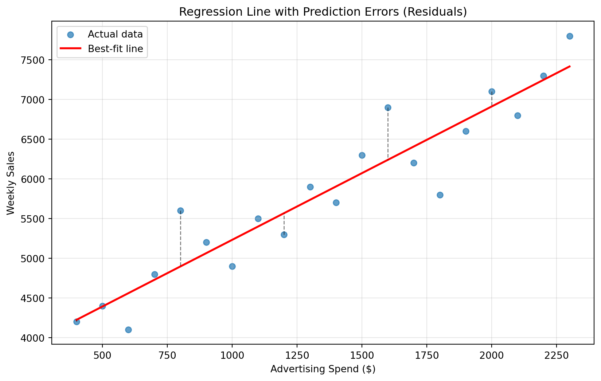
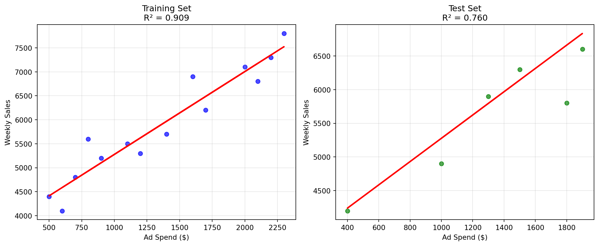

In business, building a model is only half the battle. The real question is: How good is your model? Consider these scenarios:
A marketing manager builds a model to predict campaign ROI. Should they trust predictions of 15% returns?
A supply chain analyst forecasts demand to optimize inventory. How far off might their estimates be?
A finance team predicts quarterly revenue for budgeting. What’s their margin of error?
NoteExperiential Learning
Think of a time you made a prediction about something important—maybe estimating how long a project would take, forecasting sales for your business, or predicting your final grade in a course.
How did you know if your prediction was good? Did you wait until the actual outcome to see how close you were? What would have helped you assess the quality of your prediction beforehand?
By the end of this chapter, you’ll have concrete tools to measure prediction quality before you need to make critical business decisions.
Model evaluation answers the fundamental question: “How well does our model perform?” Without proper evaluation, you might deploy a model that makes systematically poor predictions, leading to costly business mistakes. This chapter teaches you to measure model performance using various metrics and understand when each metric is most appropriate for business decision-making.
By the end of this chapter, you will be able to:
Explain how regression finds the best-fit line by minimizing Sum of Squared Errors (SSE)
Calculate and interpret R², MSE, RMSE, MAE, and MAPE for regression models
Apply train/test splits to evaluate model performance on unseen data
Connect different error metrics to specific business decision contexts
Recognize the importance of generalization for real-world model deployment
Note📓 Follow Along in Colab!
As you read through this chapter, we encourage you to follow along using the companion notebook in Google Colab (or another editor of your choice). This interactive notebook lets you run all the code examples covered here—and experiment with your own ideas.
When we build a regression model, the algorithm automatically finds the “best-fit line” through our data points. But what makes one line “better” than another? The answer lies in prediction errors—the differences between what our model predicts and what actually happens.
From Visual Intuition to Mathematical Precision
Let’s return to our advertising example from the previous chapter. When you look at a scatterplot, you can imagine drawing many different lines through the data points. Some would fit the pattern well, others would miss it entirely. We use residuals to guide us on which line is best.
The dashed lines in the plot below represent residuals (or errors), the vertical distances between each actual data point and our prediction line. Linear regression finds the line that minimizes the Sum of Squared Errors (SSE), which is exactly what it sounds like: add up all the squared residuals.
\[ SSE = \sum_{i=1}^{n} (y_i - \hat{y}_i)^2 \]
Where \(y_i\) is the actual value, \(\hat{y}_i\) is the predicted value, and \(n\) is the number of data points.
Show code for regression line errors
import pandas as pdimport matplotlib.pyplot as pltimport numpy as npfrom sklearn.linear_model import LinearRegressionfrom sklearn.metrics import mean_squared_error, mean_absolute_error, r2_score, root_mean_squared_error# Recreate our advertising datadata = pd.DataFrame({"ad_spend": [400, 500, 600, 700, 800, 900, 1000, 1100, 1200, 1300, 1400, 1500, 1600, 1700, 1800, 1900, 2000, 2100, 2200, 2300],"weekly_sales": [4200, 4400, 4100, 4800, 5600, 5200, 4900, 5500, 5300, 5900, 5700, 6300, 6900, 6200, 5800, 6600, 7100, 6800, 7300, 7800]})# Fit our regression modelX = data[['ad_spend']]y = data['weekly_sales']model = LinearRegression()model.fit(X, y)# Make predictionspredictions = model.predict(X)# Visualize the fitplt.figure(figsize=(10, 6))plt.scatter(data['ad_spend'], data['weekly_sales'], alpha=0.7, label='Actual data')plt.plot(data['ad_spend'], predictions, color='red', linewidth=2, label='Best-fit line')# Show residuals for a few pointsfor i inrange(0, len(data), 4): # Show every 4th point to avoid clutter plt.plot([data['ad_spend'].iloc[i], data['ad_spend'].iloc[i]], [data['weekly_sales'].iloc[i], predictions[i]], 'k--', alpha=0.5, linewidth=1)plt.xlabel('Advertising Spend ($)')plt.ylabel('Weekly Sales')plt.title('Regression Line with Prediction Errors (Residuals)')plt.legend()plt.grid(True, alpha=0.3)plt.show()

Why Square the Errors?
You might wonder: why square the errors instead of just adding them up directly? There are several important reasons:
Positive and negative errors don’t cancel out: Without squaring, a prediction that’s $100 too high would cancel out one that’s $100 too low, making it look like we have zero error when we actually have significant prediction problems.
Larger errors get penalized more: Squaring means that one prediction that’s off by $200 contributes more to our error measure than two predictions that are each off by $100. This reflects the business reality that big mistakes are often disproportionately costly.
Mathematical convenience: Squared errors have nice mathematical properties that make the optimization problem solvable with standard techniques.
Computing SSE Manually
Let’s calculate the Sum of Squared Errors step-by-step for our advertising model to see this concept in action:
# Calculate SSE manually using our advertising data# (Using the same data and model from the visualization above)# Step 1: Calculate residuals (errors) for each predictionresiduals = y - predictions# Step 2: Square each residualsquared_residuals = residuals **2# Step 3: Sum all squared residuals to get SSEsse_manual = np.sum(squared_residuals)print(f"Sum of Squared Errors: {sse_manual:,.0f}")print(f"Number of data points: {len(y)}")print(f"Average squared error per point: {sse_manual/len(y):,.0f}")# Show the calculation for the first 5 data pointsprint(f"\nBreaking down the first 5 predictions:")print(f"{'Point':<8}{'Actual':<8}{'Predicted':<10}{'Error':<8}{'Squared Error':<12}")print(f"{'-'*50}")for i inrange(5): actual = y.iloc[i] predicted = predictions[i] error = actual - predicted squared_error = error **2print(f"{i+1:<8} ${actual:<7.0f} ${predicted:<9.0f}{error:<+7.0f}{squared_error:<11.0f}")print(f"\nSum of first 5 squared errors: {np.sum(squared_residuals[:5]):.0f}")print(f"Total SSE for all {len(y)} points: {sse_manual:.0f}")
Sum of Squared Errors: 2,409,759
Number of data points: 20
Average squared error per point: 120,488
Breaking down the first 5 predictions:
Point Actual Predicted Error Squared Error
--------------------------------------------------
1 $4200 $4224 -24 590
2 $4400 $4392 +8 60
3 $4100 $4560 -460 211808
4 $4800 $4728 +72 5156
5 $5600 $4896 +704 495383
Sum of first 5 squared errors: 712996
Total SSE for all 20 points: 2409759
Although SSE is crucial for our regression algorithm to converge on the optimal solution—it’s literally what the algorithm minimizes—it’s not very interpretable for business decision-making. An SSE of several hundred thousand represents our total prediction error across all 20 data points, but this number alone doesn’t tell us if our model is good or poor.
Consequently, we tend to lean on other metrics that are more interpretable to the problem at hand, such as R² (which gives us a percentage), RMSE (which is in the same units as our target variable), or business-specific metrics that directly relate to costs and outcomes.
Note🎥 Video Spotlight: Understanding SSE (and SST & SSR)
This video provides an excellent foundation for understanding Sum of Squares Error (SSE) along with two other terms – Sum of Squares Total (SST) and Sum of Squares Regression (SSR). The video explores how these three concepts measure variability in a dataset and their interconnectedness in evaluating regression line effectiveness.
22.2 Goodness of Fit: R² (R-Squared)
While SSE tells us about total error, it’s hard to interpret on its own. Is an SSE of 500,000 good or bad? It depends on the scale of your data. R² (R-squared) solves this problem by converting error into a more interpretable percentage.
Understanding the R² Formula
R² measures the proportion of variation in your target variable that’s explained by your model. It’s calculated using this relationship:
\[ R^2 = 1 - \frac{SSE}{TSS} = 1 - \frac{\text{Sum of Squared Errors}}{\text{Total Sum of Squares}} \]
Where:
SSE = Sum of squared differences between actual and predicted values
TSS = Sum of squared differences between actual values and the mean
Think of it this way: TSS represents how much your data varies around its average (if you had no model at all), while SSE represents how much it varies around your model’s predictions. R² tells you what fraction of the original variation your model successfully “explains.”
NoteManual vs Automated R² Calculation
We can calculate R² manually as shown below, but since this is a very common metric used in machine learning, scikit-learn provides the r2_score function to simplify this for us, which we also see in the code below.
# Calculate R² step by stepy_mean = np.mean(y)tss = np.sum((y - y_mean) **2) # Total Sum of Squaressse = np.sum((y - predictions) **2) # Sum of Squared Errorsr_squared_manual =1- (sse / tss)# Compare with sklearn's calculationr_squared_sklearn = r2_score(y, predictions)print(f"Manual R² calculation: {r_squared_manual:.4f}")print(f"Sklearn R² calculation: {r_squared_sklearn:.4f}")print(f"Model R² (from .score() method): {model.score(X, y):.4f}")print(f"\nInterpretation: {r_squared_manual:.1%} of the variation in weekly sales")print(f"is explained by advertising spend in our model.")
Manual R² calculation: 0.8862
Sklearn R² calculation: 0.8862
Model R² (from .score() method): 0.8862
Interpretation: 88.6% of the variation in weekly sales
is explained by advertising spend in our model.
Interpreting R² Values
R² ranges from 0 to 1 (and can be negative for very poor models):
R² = 1.0: Perfect fit—your model explains 100% of the variation
R² = 0.8: Strong fit—your model explains 80% of the variation
R² = 0.5: Moderate fit—your model explains 50% of the variation
R² = 0.0: No relationship—your model is no better than just predicting the average
In business contexts, what constitutes a “good” R² depends heavily on your domain:
Financial markets: R² of 0.1-0.3 might be excellent (markets are noisy!)
Manufacturing quality: R² of 0.9+ might be expected (controlled processes)
Marketing response: R² of 0.5-0.8 is often realistic (human behavior varies)
TipThe Bottom Line on “Good” R² Values
There is no universal threshold that determines whether an R² value is “good” or “bad.” What constitutes a strong R² is entirely dependent on the domain and problem at hand. A seemingly low R² of 0.2 might be groundbreaking in a noisy field like stock market prediction, while the same value would be concerning in a controlled manufacturing setting. Always evaluate R² in the context of your specific industry, the inherent variability of your data, and the standards established by previous research in your domain.
Check out this video to help make the \(R^2\) concept more concrete:
22.3 Error Metrics for Business Decisions
While R² gives us a general sense of model quality, specific business decisions often require more targeted metrics. Different error measures emphasize different aspects of prediction accuracy.
Mean Squared Error (MSE) and Root Mean Squared Error (RMSE)
MSE is simply the average of our squared errors, while RMSE is the square root of MSE. RMSE has a crucial advantage: it’s in the same units as our target variable, making it much easier to interpret.
For our advertising example, the RMSE is approximately $347. This means that when we predict weekly sales based on advertising spend, our predictions are typically off by about $347. To put this in business context: if we predict weekly sales of $6,000, the actual sales could reasonably range from about $5,653 to $6,347. For a marketing manager planning inventory or staffing, this level of uncertainty might be quite acceptable for weekly planning.
# Calculate MSE and RMSEmse = mean_squared_error(y, predictions)rmse = root_mean_squared_error(y, predictions)print(f"Mean Squared Error (MSE): {mse:,.0f}")print(f"Root Mean Squared Error (RMSE): ${rmse:,.0f}")print(f"\nInterpretation: On average, our predictions are off by about ${rmse:,.0f}")print(f"when predicting weekly sales.")
Mean Squared Error (MSE): 120,488
Root Mean Squared Error (RMSE): $347
Interpretation: On average, our predictions are off by about $347
when predicting weekly sales.
TipBusiness Context for RMSE
If you’re a marketing manager and your model has an RMSE of $347 (like our advertising example), you know that your weekly sales predictions are typically within about $347 of the actual values. This helps you set realistic expectations and plan appropriate safety margins. The key advantage of RMSE is that it speaks in the same units as your business outcome—dollars, units sold, customers served—making it immediately interpretable for operational planning and risk assessment.
Mean Absolute Error (MAE)
MAE calculates the average absolute difference between predictions and actual values. Unlike RMSE, it doesn’t square the errors, so it treats all errors equally regardless of size.
\[ MAE = \frac{1}{n} \sum_{i=1}^{n} |y_i - \hat{y}_i| \]
# Calculate MAEmae = mean_absolute_error(y, predictions)print(f"Mean Absolute Error (MAE): ${mae:,.0f}")print(f"Root Mean Squared Error (RMSE): ${rmse:,.0f}")print(f"\nNotice that RMSE > MAE because RMSE penalizes large errors more heavily.")# Demonstrate the difference with an extreme outliery_with_outlier = y.copy()predictions_with_outlier = predictions.copy()y_with_outlier.iloc[0] =10000# Simulate one very bad predictionmae_outlier = mean_absolute_error(y_with_outlier, predictions_with_outlier)rmse_outlier = root_mean_squared_error(y_with_outlier, predictions_with_outlier)print(f"\nWith one extreme outlier:")print(f"MAE changes from ${mae:,.0f} to ${mae_outlier:,.0f}")print(f"RMSE changes from ${rmse:,.0f} to ${rmse_outlier:,.0f}")print(f"RMSE is much more sensitive to outliers!")
Mean Absolute Error (MAE): $270
Root Mean Squared Error (RMSE): $347
Notice that RMSE > MAE because RMSE penalizes large errors more heavily.
With one extreme outlier:
MAE changes from $270 to $557
RMSE changes from $347 to $1,337
RMSE is much more sensitive to outliers!
ImportantBusiness Takeaway: Choosing Between MAE and RMSE
The choice between MAE and RMSE should align with your business risk tolerance. If one large prediction error could cause significant business damage—like underestimating demand for a critical product launch or miscalculating loan default risk—use RMSE because it heavily penalizes these costly outliers. However, if prediction errors have roughly linear business costs—such as staffing customer service or managing routine inventory—MAE provides a clearer picture of typical performance without being skewed by occasional extreme cases.
When to use MAE vs RMSE:
MAE when all errors are equally costly (e.g., customer support response time)
RMSE when large errors are disproportionately bad (e.g., financial risk models)
Mean Absolute Percentage Error (MAPE)
MAPE expresses errors as percentages of the actual values, making it useful for comparing models across different scales or for relative performance evaluation.
# Calculate MAPE using scikit-learnfrom sklearn.metrics import mean_absolute_percentage_errormape = mean_absolute_percentage_error(y, predictions) *100# Convert to percentageprint(f"Mean Absolute Percentage Error (MAPE): {mape:.1f}%")print(f"\nInterpretation: On average, our predictions are off by {mape:.1f}%")print(f"of the actual weekly sales value.")# Show example: if actual sales are $6,000example_sales =6000example_error = example_sales * (mape /100)print(f"\nExample: For actual sales of ${example_sales:,}")print(f"we'd expect our prediction to be off by about ${example_error:.0f}")
Mean Absolute Percentage Error (MAPE): 4.7%
Interpretation: On average, our predictions are off by 4.7%
of the actual weekly sales value.
Example: For actual sales of $6,000
we'd expect our prediction to be off by about $280
TipWhen MAPE is Most Valuable
MAPE shines in scenarios where relative performance matters more than absolute errors. Retail forecasting often uses MAPE because a 10% error means the same thing whether you’re predicting sales of $100 or $10,000—it represents the same proportional impact on inventory planning or revenue projections. MAPE is ideal when comparing models across different product categories, time periods, or business units with vastly different scales.
Important limitation: Be cautious with MAPE when actual values can be close to zero, as it can explode to infinity and provide misleading results.
Knowledge Check
NoneHands-On: Build and Evaluate Your Own Model
Now it’s your turn to build a regression model and compute all the evaluation metrics we’ve learned about. You’ll use the Advertising dataset from Chapter 21.
Dataset: Load the Advertising data and build a model to predict sales using all three advertising channels (TV, radio, newspaper).
# Load the data (adjust path as needed for local files)advertising = pd.read_csv("../data/Advertising.csv")# Alternative: Load directly from GitHub if you don't have local access# advertising = pd.read_csv("https://raw.githubusercontent.com/bradleyboehmke/uc-bana-4080/main/data/Advertising.csv")print("Advertising dataset shape:", advertising.shape)print(advertising.head())
Build the model: Create a multiple regression model predicting sales from TV, radio, and newspaper advertising spend.
Calculate all metrics: Compute and report:
SSE (Sum of Squared Errors)
R² (R-squared)
MSE (Mean Squared Error)
RMSE (Root Mean Squared Error)
MAE (Mean Absolute Error)
MAPE (Mean Absolute Percentage Error)
Interpret the results:
What does each metric tell you about model performance?
If you were a marketing manager, which metric would be most useful for budget planning?
How would you explain the model’s accuracy to a business stakeholder?
Business context: Given your results, would you trust this model to guide a $50,000 advertising budget allocation? Why or why not?
22.4 The Critical Importance of Generalization
All the metrics we’ve calculated so far have a fundamental problem: we computed them on the same data we used to train our model. This is like a student grading their own homework—the results will be overly optimistic.
ImportantThe Business Reality of Model Performance
In business, what matters isn’t how well your model fits historical data, but how well it predicts future, unseen data. This is called generalization.
Train/Test Splits: Simulating the Future
The solution is to split our data into two parts:
Training set (~70-80%): Used to fit the model
Test set (~20-30%): Used to evaluate performance (model never sees this during training)
This simulates the real-world scenario where you build a model on historical data and then use it to predict future outcomes.
flowchart TD
A[Complete Dataset] --> B[Training Set<br/>70-80%]
A --> C[Test Set<br/>20-30%]
B --> D[Train Model]
D --> E[Trained Model]
C --> F[Evaluate Performance]
E --> F
F --> G[Unbiased Performance<br/>Estimate]
style A fill:#f0f8ff
style B fill:#e8f5e8
style C fill:#ffe6e6
style G fill:#fff2cc
Figure 22.1: Proper data splitting ensures unbiased evaluation by keeping test data completely separate from model training.
Splitting the Data
Let’s first look at how to properly split our data using random sampling. The random_state parameter ensures our results are reproducible—anyone running this code will get the same split.
from sklearn.model_selection import train_test_split# Split the data randomly with reproducible resultsX_train, X_test, y_train, y_test = train_test_split( X, y, test_size=0.3, random_state=30)print(f"Total data points: {len(X)}")print(f"Training set: {len(X_train)} points ({len(X_train)/len(X):.1%})")print(f"Test set: {len(X_test)} points ({len(X_test)/len(X):.1%})")
Total data points: 20
Training set: 14 points (70.0%)
Test set: 6 points (30.0%)
ImportantReproducible Results with random_state
What random_state=30 does: This parameter controls the randomness of the split. Setting it to a specific number (like 30) ensures that every time you run this code, you’ll get exactly the same train/test split. This is crucial for reproducible results—without it, your model performance might vary slightly each time you run your analysis simply due to different random splits.
The golden rule: Once you set aside your test set, don’t touch it until you’re completely done with model development. The moment you use test data to make decisions about your model (like choosing features or tuning parameters), it’s no longer a fair evaluation.
Training and Evaluating the Model
Now that we have our data split, we follow a two-step process: first train the model only on the training data, then evaluate its performance on both the training and test sets.
# Train model on training data onlymodel_train = LinearRegression()model_train.fit(X_train, y_train)# Evaluate on both training and test setstrain_predictions = model_train.predict(X_train)test_predictions = model_train.predict(X_test)# Calculate metrics for both setsprint(f"\n{'Metric':<20}{'Training Set':<15}{'Test Set':<15}")print(f"{'-'*50}")print(f"{'R²':<20}{r2_score(y_train, train_predictions):<15.3f}{r2_score(y_test, test_predictions):<15.3f}")print(f"{'RMSE':<20}{root_mean_squared_error(y_train, train_predictions):<15.0f}{root_mean_squared_error(y_test, test_predictions):<15.0f}")print(f"{'MAE':<20}{mean_absolute_error(y_train, train_predictions):<15.0f}{mean_absolute_error(y_test, test_predictions):<15.0f}")
Metric Training Set Test Set
--------------------------------------------------
R² 0.909 0.760
RMSE 330 403
MAE 258 296
Our example uses random splitting, which works well when each data point is independent and we’re not dealing with time-series data. For many business problems involving temporal data (like predicting next month’s sales), you’d want to use time-based splitting instead—training on earlier periods and testing on later ones to better simulate real-world deployment.
TipTime-Series Splitting in Scikit-Learn
For time-series data, scikit-learn provides TimeSeriesSplit from sklearn.model_selection. This class creates multiple train/test splits where each split respects the temporal order—you always train on earlier data and test on later data. This is essential for problems like sales forecasting, stock prediction, or any scenario where you’re predicting future events based on historical patterns.
Looking at our results, we can see that our model performs better on the training set (RMSE ≈ $330) compared to the test set (RMSE ≈ $403). This pattern—where training performance exceeds test performance—is actually quite common and tells us something important about how well our model generalizes to new data.
Interpreting Training vs Test Performance
The relationship between training and test performance is one of the most important diagnostic tools in machine learning. It tells you not just how accurate your model is, but how trustworthy those accuracy estimates are for real-world deployment. The key insight is comparing training and test performance:
Similar performance: Good sign—your model generalizes well
Training much better than test: Overfitting—your model memorized the training data
Test much better than training: Unusual—might indicate data leakage or a lucky split
Our example shows the second scenario, where training RMSE ($330) is notably better than test RMSE ($403). This 22% performance gap suggests our model may be slightly overfitting, but isn’t necessarily a major concern for a simple linear model like ours. Let’s visualize this difference to better understand what’s happening.
Show code for training vs test performance visualization
# Visualize training vs test performanceplt.figure(figsize=(12, 5))# Training setplt.subplot(1, 2, 1)plt.scatter(X_train, y_train, alpha=0.7, color='blue')plt.plot(X_train, train_predictions, color='red', linewidth=2)plt.xlabel('Ad Spend ($)')plt.ylabel('Weekly Sales')plt.title(f'Training Set\nR² = {r2_score(y_train, train_predictions):.3f}')plt.grid(True, alpha=0.3)# Test setplt.subplot(1, 2, 2)plt.scatter(X_test, y_test, alpha=0.7, color='green')plt.plot(X_test, test_predictions, color='red', linewidth=2)plt.xlabel('Ad Spend ($)')plt.ylabel('Weekly Sales')plt.title(f'Test Set\nR² = {r2_score(y_test, test_predictions):.3f}')plt.grid(True, alpha=0.3)plt.tight_layout()plt.show()

The side-by-side plots above show the same model (red line) applied to two different datasets. Notice how the training set (left) shows a tighter fit with less scatter around the line, while the test set (right) shows more variability and a slightly lower R² value. This visual comparison makes it clear why we can’t rely solely on training performance—the test set reveals how our model actually performs on unseen data, which is what matters for business decision-making.
NoteImpact of Dataset Size on Performance Variation
Keep in mind that our example dataset is quite small (only 20 data points total). With small datasets, it’s not uncommon to see larger disparities between training and test performance simply due to random variation in how the data gets split. Smaller test sets are more susceptible to containing “unlucky” or particularly challenging examples that make the model appear worse than it actually is. As your datasets grow larger (thousands or tens of thousands of observations), the performance gap between training and test sets typically becomes more stable and meaningful.
Overfitting vs Underfitting: Finding the Sweet Spot
Our evaluation process is fundamentally about finding a model that generalizes well—one that performs consistently on both training and test data. This means avoiding two common pitfalls: underfitting (too simple) and overfitting (too complex). Understanding the balance between these extremes is crucial for building models that work in practice:
Underfitting: Model is too simple—misses important patterns (high training error, high test error)
Good fit: Model captures real patterns—generalizes well (low training error, low test error)
Overfitting: Model is too complex—memorizes noise (very low training error, high test error)
Let’s create some examples to illustrate these concepts visually. So far in this course, we’ve focused on linear relationships—where the relationship between variables can be represented by a straight line. However, not all real-world scenarios are linear in nature. Sometimes there are curved, non-linear patterns in data where a straight line simply won’t capture the true relationship.
When we encounter non-linear patterns, we can use more complex models to try to capture these curvatures and bends in the data. We’ll explore these advanced techniques in future chapters. For now, the plots below demonstrate how different model complexities handle non-linear data: we can create models that underfit (don’t capture the non-linear curvature), provide a good fit (capture the essential pattern), and overfit (add too much complexity and noise):
Show code for underfitting, good fit, and overfitting examples
Although we can visualize the models above and clearly see underfitting and overfitting happening, in most real-world cases we will not be able to visualize our models because we are working with many predictor variables. When you have 5, 10, or even hundreds of features, creating meaningful visualizations becomes impossible. Instead, we rely on the train and test evaluation metrics to point us to these problems—which is exactly what the RMSE comparison table below demonstrates.
Show code for RMSE comparison table
# Summary of RMSE comparisonprint("RMSE Comparison:")print(f"{'Model':<25}{'Train RMSE':<12}{'Test RMSE':<12}{'Interpretation'}")print(f"{'-'*70}")print(f"{'Linear (Underfit)':<25}{train_rmse_linear:<12.1f}{test_rmse_linear:<12.1f}{'Poor on both'}")print(f"{'Polynomial-2 (Good)':<25}{train_rmse_good:<12.1f}{test_rmse_good:<12.1f}{'Good on both'}")print(f"{'Polynomial-15 (Overfit)':<25}{train_rmse_overfit:<12.1f}{test_rmse_overfit:<12.1f}{'Great on train, poor on test'}")
RMSE Comparison:
Model Train RMSE Test RMSE Interpretation
----------------------------------------------------------------------
Linear (Underfit) 8.5 9.6 Poor on both
Polynomial-2 (Good) 7.2 7.2 Good on both
Polynomial-15 (Overfit) 5.7 9.6 Great on train, poor on test
ImportantDiagnosing Model Fit with Train/Test Metrics
The key insight is that we can diagnose these scenarios by comparing training and test RMSE values. Underfitting shows poor performance on both sets because the model is too simple to capture the underlying pattern. Good fit shows similar, reasonably low error on both training and test sets. Overfitting shows excellent training performance but significantly worse test performance—the model has memorized the training data rather than learning generalizable patterns.
Train/test splits are just the first step in finding a well-fitting model. In future chapters, you’ll learn how to systematically iterate through different models, tune model parameters, and implement additional validation procedures like cross-validation to help identify the best-fitting model for your specific problem.
Knowledge Check
NoneHands-On: Train/Test Split Practice
Now it’s your turn to apply proper train/test evaluation! You’ll use the full Advertising dataset you imported in the previous knowledge check to build and evaluate a multiple regression model.
Your Tasks:
Split the data into train/test sets using a 70/30 split with random_state=42
Build a multiple regression model using all three predictor variables (TV, radio, newspaper) on the training data only
Evaluate the model by calculating these metrics for both training and test sets:
R² (R-squared)
RMSE (Root Mean Squared Error)
MAE (Mean Absolute Error)
Interpret your results:
Is your model overfitting, underfitting, or showing good generalization?
What does the RMSE tell you about prediction accuracy in business terms?
How would you explain these results to a marketing manager planning next quarter’s advertising budget?
Bonus Challenge: Compare your multiple regression results with a simple model using only TV advertising. Which generalizes better to the test set?
22.5 Business Alignment: Connecting Model and Business Performance
As we discussed in Chapter 20, successful machine learning requires aligning your model performance metrics (like RMSE, MAE, and R²) with your business performance metrics (like cost savings, revenue increase, and customer satisfaction). The goal isn’t just to build a model that generalizes well to new data—it’s to build a model that generalizes well to your specific business scenario and drives meaningful outcomes.
flowchart LR
subgraph ML[Successful ML System]
direction BT
subgraph p0[Business Impact]
end
subgraph p1[Model Performance<br/>RMSE, MAE, R², MAPE]
end
subgraph p2[Business Performance<br/>Cost reduction, Revenue, Efficiency]
end
p1 --> p0
p2 --> p0
end
Figure 22.2: Model evaluation success requires both technical performance and business impact alignment.
The Critical Connection: Why Metric Choice Matters
The evaluation metrics you choose directly influence how your model learns and what it optimizes for. This means your choice of evaluation metric can make or break your business outcomes. Consider these scenarios:
Scenario 1: Inventory Forecasting
Business goal: Minimize total inventory costs (storage + stockouts)
Poor metric choice: R² only—ignores the cost asymmetry between overstocking and understocking
Better alignment: MAPE or MAE—reflects proportional costs across different product values
Business result: Model optimizes for error patterns that actually reduce operational costs
Scenario 2: Financial Risk Assessment
Business goal: Prevent catastrophic losses while maintaining profitability
Poor metric choice: MAE—treats small and large losses equally
Better alignment: RMSE—heavily penalizes the large errors that could bankrupt the business
Business result: Model prioritizes avoiding devastating losses over minor improvements
Scenario 3: Customer Service Staffing
Business goal: Match staffing levels to call volume for consistent service quality
Poor metric choice: MAPE—percentage errors don’t reflect linear staffing costs
Better alignment: MAE—each additional call has roughly the same staffing cost
Business result: Model predictions translate directly to operational planning
TipA Framework for Metric-Business Alignment
Instead of asking “What’s the best metric?” ask “What business outcomes am I trying to drive?” Then work backward:
Identify your business cost structure: Are errors linear, quadratic, or asymmetric in cost?
Match the mathematical properties: Choose metrics whose optimization aligns with your cost structure
Consider stakeholder needs: Will decision-makers understand and trust the metric?
Test the alignment: Verify that improving your chosen metric actually improves business outcomes
Knowledge Check
NoneApplying Evaluation Metrics to Real Business Problems
Consider these three business scenarios:
Scenario A: Restaurant Chain Food Cost Optimization A regional restaurant chain wants to predict daily food costs at each location to minimize waste while ensuring adequate supply. The business goal is to order the right amount of fresh ingredients each day—overordering leads to expensive food waste, while underordering results in menu items being unavailable and lost revenue. The cost of waste is roughly proportional to the amount ordered, and each dollar of prediction error translates directly to operational costs.
Scenario B: Insurance Premium Setting
An insurance company needs to predict individual claim amounts to set appropriate premiums while remaining competitive. The business objective is to avoid catastrophic underpricing—one severely underpriced high-risk customer could cost millions in claims, potentially wiping out profits from hundreds of correctly priced policies. Small pricing errors are manageable, but large errors can threaten the company’s financial stability.
Scenario C: Retail Sales Forecasting Across Categories A retail store wants to predict next month’s sales across different product categories (electronics, clothing, home goods) to optimize inventory purchasing and staffing. The business goal is to have consistent prediction accuracy across all categories—whether predicting $1,000 in accessory sales or $50,000 in electronics sales. The store needs to compare model performance across vastly different sales volumes to make unified business decisions.
Your Tasks:
For each scenario, consider how each error metric (R², RMSE, MAE, MAPE) would be interpreted in the business context. What would each metric tell the decision-makers? Based on this analysis, do you think one metric would be more preferred over the others? Explain your reasoning.
Training vs Test Performance: If Scenario B showed these results, what would you conclude?
Training RMSE: $850
Test RMSE: $1,200
Training R²: 0.78
Test R²: 0.52
22.6 Summary
This chapter equipped you with essential tools for evaluating regression model performance and understanding whether your models are ready for real-world deployment. You learned that building a model is only the beginning—proper evaluation determines whether that model will actually help or hurt your business decisions.
Key evaluation concepts you mastered include:
R² as a measure of overall model fit, representing the proportion of variation your model explains
Error metrics (MSE, RMSE, MAE, MAPE) that quantify prediction accuracy in different ways
Train/test splits for honest evaluation that simulates real-world model deployment
Overfitting vs underfitting and why models must balance complexity with generalizability
Business-aligned metric selection based on the relative costs of different types of prediction errors
The critical insight is that model evaluation must align with business context. A model that minimizes RMSE might be perfect for financial risk management but inappropriate for inventory planning. Understanding when and why to use different metrics ensures your models support rather than undermine business objectives.
Looking ahead: The evaluation techniques you’ve learned here apply to every machine learning algorithm you’ll encounter. Whether you’re building decision trees, neural networks, or ensemble methods, the fundamental principles of train/test splits, metric selection, and generalization remain constant. In future chapters, we’ll also learn about additional evaluation metrics designed specifically for classification models (like accuracy, precision, and recall) and unsupervised models (like silhouette scores and inertia). In the next chapters, you’ll explore more sophisticated modeling techniques, but you’ll always return to these evaluation fundamentals to determine which models work best for your specific business challenges.
Quick Reference: Regression Evaluation Metrics
Concept
Description
Scikit-Learn Function
When to Use
Sum of Squared Errors (SSE)
Total squared differences between actual and predicted values
Proportion of variance in target variable explained by model
r2_score(y_true, y_pred) or model.score(X, y)
Overall model goodness-of-fit
Mean Squared Error (MSE)
Average of squared prediction errors
mean_squared_error(y_true, y_pred)
When large errors are costly
Root Mean Squared Error (RMSE)
Square root of MSE, in same units as target
root_mean_squared_error(y_true, y_pred)
Interpretable error magnitude
Mean Absolute Error (MAE)
Average absolute difference between actual and predicted
mean_absolute_error(y_true, y_pred)
When all errors have equal cost
Mean Absolute Percentage Error (MAPE)
Average percentage error relative to actual values
mean_absolute_percentage_error(y_true, y_pred)
Comparing across different scales
Train/Test Split
Dividing data for training and evaluation
train_test_split(X, y, test_size=0.3, random_state=42)
Honest model evaluation
Time Series Split
Temporal data splitting for time-based problems
TimeSeriesSplit(n_splits=5)
Time-dependent data
22.7 End of Chapter Exercise
These exercises align with the regression modeling from Chapter 21 but now focus on proper evaluation techniques. You’ll work with the same three datasets from ISLP, applying the train/test split methodology and error metrics you’ve learned to assess model performance and business readiness.
NoneExercise 1: Credit Risk Analysis with Evaluation
Company: A regional bank Goal: Understand what drives customers’ credit card balances to inform risk management and marketing strategies, with proper model evaluation Dataset: Credit dataset from ISLP package
Credit dataset loaded
ID Income Limit Rating Cards Age Education Gender Student Married \
0 1 14.891 3606 283 2 34 11 Male No Yes
1 2 106.025 6645 483 3 82 15 Female Yes Yes
2 3 104.593 7075 514 4 71 11 Male No No
3 4 148.924 9504 681 3 36 11 Female No No
4 5 55.882 4897 357 2 68 16 Male No Yes
Ethnicity Balance
0 Caucasian 333
1 Asian 903
2 Asian 580
3 Asian 964
4 Caucasian 331
Your Tasks:
Split the data into training (70%) and test (30%) sets using random_state=42
Build a regression model predicting Balance using Income, Limit, Age, and Gender (remember to dummy encode Gender)
Calculate all error metrics (R², RMSE, MAE, MAPE) for both training and test sets
Evaluate generalization: Is your model overfitting, underfitting, or showing good generalization? Compare training vs test performance
Business interpretation: What does the RMSE tell you about prediction accuracy in dollar terms? If the bank uses this model to set credit limits, what’s the practical meaning of your error metrics?
NoneExercise 2: Baseball Salary Analysis with Evaluation
Company: A professional baseball team Goal: Better understand the drivers of player salaries to inform contract negotiations, with rigorous model evaluation Dataset: Hitters dataset from ISLP package
Hitters = load_data('Hitters')print("Hitters dataset loaded")print(Hitters.head())# Note: You'll need to handle missing values in the Salary column
Hitters dataset loaded
AtBat Hits HmRun Runs RBI Walks Years CAtBat CHits CHmRun CRuns \
0 293 66 1 30 29 14 1 293 66 1 30
1 315 81 7 24 38 39 14 3449 835 69 321
2 479 130 18 66 72 76 3 1624 457 63 224
3 496 141 20 65 78 37 11 5628 1575 225 828
4 321 87 10 39 42 30 2 396 101 12 48
CRBI CWalks League Division PutOuts Assists Errors Salary NewLeague
0 29 14 A E 446 33 20 NaN A
1 414 375 N W 632 43 10 475.0 N
2 266 263 A W 880 82 14 480.0 A
3 838 354 N E 200 11 3 500.0 N
4 46 33 N E 805 40 4 91.5 N
Data Cleaning Hint: The Hitters dataset contains some missing values in the Salary column. You may need to remove rows with missing salary data before fitting your regression model. Consider using dropna() or similar methods to clean the data first.
Your Tasks:
Clean the data by removing rows with missing salary values
Split the data into training (70%) and test (30%) sets using random_state=42
Build a regression model predicting Salary using Years (experience), Hits (recent batting performance), and League (dummy encode this categorical variable)
Calculate all error metrics (R², RMSE, MAE, MAPE) for both training and test sets
Assess model reliability: How well does your model generalize? What does the RMSE mean in terms of salary prediction accuracy?
Business application: If you were a player agent, how would you use these results to negotiate contracts? What are the limitations of your model’s predictions?
NoneExercise 3: College Application Analysis with Evaluation
Company: Higher education consulting firm Goal: Analyze what factors drive the number of applications a college receives, with proper evaluation for advisory recommendations Dataset: College dataset from ISLP package
College = load_data('College')print("College dataset loaded")print(College.head())
Split the data into training (70%) and test (30%) sets using random_state=42
Build a regression model predicting Apps (applications received) using Top10perc (percent of students from top 10% of high school class), Outstate (out-of-state tuition), and Private (dummy encode this categorical variable)
Calculate all error metrics (R², RMSE, MAE, MAPE) for both training and test sets
Evaluate model performance: Does your model show good generalization? What do the error metrics tell you about prediction reliability?
Business context interpretation: What does the RMSE mean in terms of application prediction accuracy? If you’re advising college presidents on strategic decisions, how confident should they be in your model’s predictions?
Strategic recommendations: Based on your model’s coefficients and performance metrics, what strategies would you recommend to increase applications? What are the limitations and risks of using this model for decision-making?
Metric selection: Which error metric (R², RMSE, MAE, or MAPE) would be most useful for college administrators? Why?